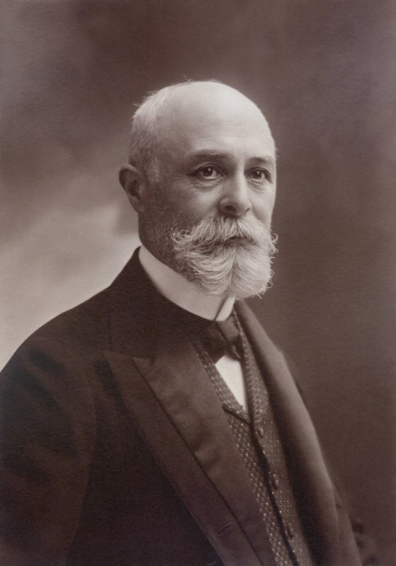

História da radiação
Do acaso de 1895 à descrição das emissões radioativas.

Röntgen e Becquerel
Wilhelm K. Röntgen descobre os Raios X. Becquerel estuda substâncias fosforescentes e fluorescentes.

Rádio e Polônio
Marie Curie e Pierre Curie aprofundam os trabalhos e descobrem o Rádio (Ra) e o Polônio (Po).

Ernest Rutherford
Descreve a natureza das emissões radioativas (Alfa, Beta e Gama) e ganha o Prêmio Nobel de Química em 1908.